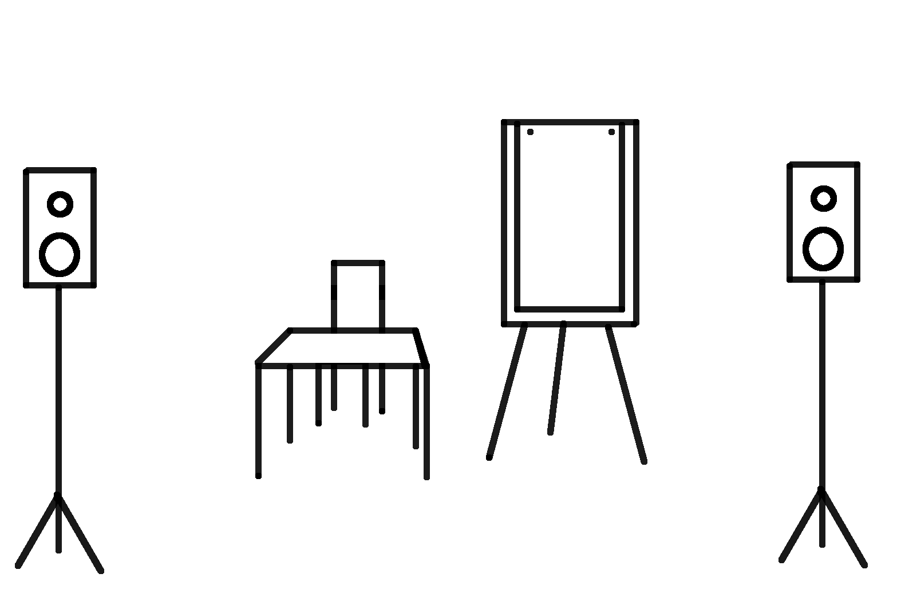

Fiche technique en autonomie
Les Conférences de poche
Léon Lenclos - Cie Nokill
Comédien
Léon Lenclos - 06 27 65 68 33 – contact@leonlenclos.net
Contact technique
Léon Lenclos – 06 27 65 68 33 – contact@leonlenclos.net
N’hésitez pas à me contacter pour toutes questions !
Contact diffusion
Amparo Gallur – 07 68 52 29 53 – cie@nokill.fr
Espace scénique
- Ouverture : 4 m
- Profondeur : 2 m
- Le spectacle doit être joué dans un cadre intime, petite place, cour, petite salle...
Jauge
20 / 200
Durée
Chaque conférence dure entre 15 et 25 minutes.
Fourni par la compagnie
- Un système de sonorisation
- Un bureau et une chaise
- Un paperboard et du papier
- Des feutres
- Un micro Sennheiser HSP4 EW3 serre-tête
- Émetteur/récepteur HF de poche Sennheiser EWG4 sur piles, sortie XLR

(Dernière mise à jour : 23/11/2023)